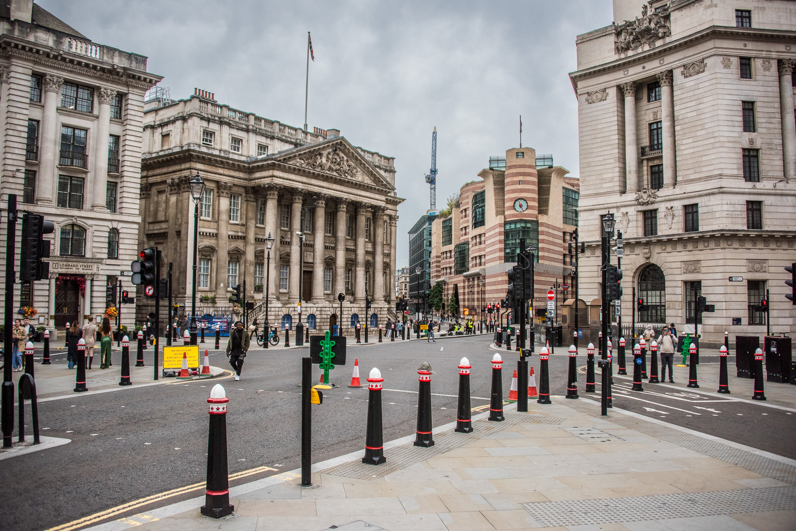
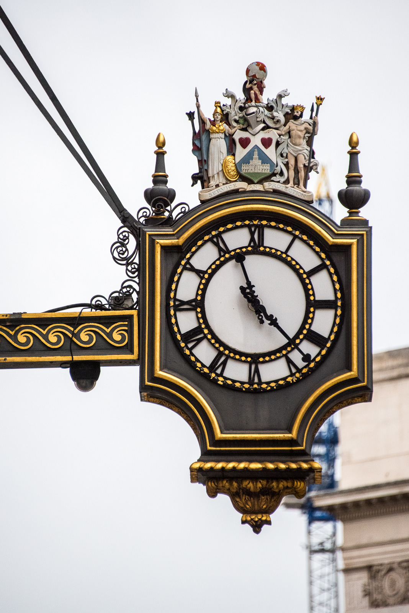
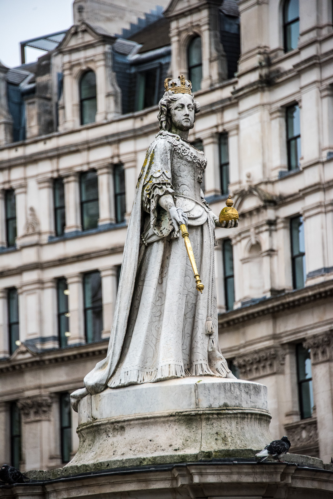

Bank Junction:
The Centre of the Square Mile
Chris is a City of London qualified guide and a committee member of the City of London Guides and Lectures Association, founded in 1983. He opens by noting that he is also a liveryman of the Worshipful Company of Pewterers, which becomes relevant later, and by checking whether anyone in the group has particular film interests. The answers include Harry Potter, the Da Vinci Code and James Bond. He has material for all of them.
Bank Junction is where five roads meet in the oldest part of London. To the left: the Bank of England, founded in 1694 as the nation's central bank and moved here in the 1730s. The ground floor of the original 1730s building was demolished in the 1830s; the current seven-storey structure dates from the Victorian reconstruction. Beneath it, in the vaults: the nation's gold reserves.
The Bank of England Museum is accessed separately from the main building — down the street, round the corner at the Starbucks, and through a side entrance. It is free, open Monday to Friday during business hours, and contains the one object that Chris considers worth noting: a one-kilogram gold bar in a protective case with a glove fitted. You can reach in and lift it. The weight is consistently surprising. Visitors always look slightly startled. The museum also traces the history of currency from its origins to the present.
Above the Bank, in the triangular pediment just below the flag, stands Britannia — a Roman creation, adopted as a symbol of trust and monetary stability. She holds a model of the Bank of England and coins. Chris observes that if you have currency with you — and he knows this is increasingly unlikely — Britannia is on it.
The Royal Exchange:
Narnia, Lloyd's & Thomas Gresham
The Royal Exchange was founded by Sir Thomas Gresham in the 1560s — a liveryman of the Mercers' Company who had seen exchange houses operating in Antwerp and brought the concept to London. The original building was destroyed in the Great Fire of 1666; a replacement was destroyed in a fire started, with considerable irony, in the ovens of the Lloyd's Coffee House that occupied part of the site — Lloyd's, of course, being the foundation of what became Lloyd's insurance. The current building dates from 1844.

For film: the Royal Exchange appears in the 1954 adaptation of The Chronicles of Narnia in a crowd scene on its steps. The lamp post visible on the exterior is a recognisable prop to those who know to look for it. The building itself is now shops, restaurants and offices — a general facelift in 2001 gave it its current pleasant interior. Worth going in.
Chris pauses at Cornhill to note that this is A Christmas Carol territory. Scrooge's counting house was somewhere up this road. Bob Cratchit's home was three miles west in Camden — but to get there on Christmas Eve, having persuaded Scrooge to give him the day off with pay, he would have had to walk through here. He was so happy, Dickens writes, that he slid on the ice of Cornhill twenty times with the children who were playing there, before sprinting the rest of the way home.
Mansion House:
Spooks, London Has Fallen & a Chandelier That Couldn't Move
Mansion House has been the official residence and workplace of the Lord Mayor of the City of London since 1752 — built to provide a neutral official home for a role that had previously been hosted by whichever livery company the Lord Mayor happened to belong to. The political logic: if the Lord Mayor lives in your livery hall, your company has an influence over them. A neutral building removes the problem.
The Lord Mayor of the City of London is a different figure from the Mayor of London: Sadiq Khan governs Greater London from City Hall, but the Lord Mayor — elected annually by the livery companies — governs only the square mile, carries diplomatic status and travels the world on behalf of British business at cabinet rank. The position is older than the UK itself.
Inside Mansion House is a chandelier that was assembled in the mid-1700s and has been a logistical challenge ever since. In its early years, it was moved between Mansion House and Guildhall depending on which venue was hosting the major event of the season. The inevitable happened — during one of these moves, pieces broke. The decision was made that the chandelier would be permanently installed in Mansion House and moved no more. It remains there.
Mansion House appears in Spooks, in London Has Fallen and in a Coldplay music video. Film production income helps fund the building's running costs. If you ever have the opportunity to tour the Egyptian Hall inside, the interior is extraordinary — one of the finest neoclassical interiors in London, not widely known because the building is rarely open.
Cheapside, Mary Poppins
& the Bow Bells Cockneys
Cheapside has been a market street since at least Roman times — cheap is an old English word for market, and the perpendicular streets still bear the names of what was sold there: Wood Street, Milk Street, Honey Lane, Bread Street. The street runs east-west as one of Londinium's original grid roads, and has been a commercial thoroughfare for two thousand years.
The church at the junction with Bread Street — St Mary-le-Bow, rebuilt by Wren after the Great Fire — is the source of the Bow Bells that define a Cockney. The tradition holds that a true Cockney must be born within the sound of Bow Bells. The word Cockney itself derives from a medieval French term meaning a strange egg — something unusual, not from the countryside — applied by rural people to Londoners who seemed odd and urban and didn't farm their own food.
The chimney sweeps in Mary Poppins are associated with this area — and the connection to the Bow Bells is musical, not just geographical. Mary Poppins is, in part, a story about the intersection of Cockney working-class life and the Edwardian upper-middle class world of the Banks family. The chimney sweeps dance on the rooftops of Cheapside-adjacent territory. The large dragon atop the church — nine feet long — is the dragon of the City of London, which appears at the boundaries of the square mile on marker posts and statues throughout the area.
Why Every Wren Church
Is Different
At its peak, the City of London had over 140 churches. The Great Fire destroyed most of them. Christopher Wren was commissioned to rebuild more than 50 — and built none of them the same way twice. He had a method: first, build a box to get the parishioners back in. Then, come back and build a steeple. The steeple reflected the wealth of the local parish. He was not going to IKEA and buying fifty identical steeples. Each one is different, according to the resources available and the character of the congregation.
Wren died around the age of 90. He was not, technically, an architect — the profession didn't exist as a formal category in the 17th century. He was a scientist, mathematician, artist and a very close friend of both King Charles I and King Charles II. The royal connection helps explain how he received so many commissions. He built the dome of St Paul's at a time when Italian Baroque engineering was distrusted in England as Catholic and foreign. He introduced it anyway. He got away with it.
Guildhall, the Livery Companies
& the Amphitheatre Underfoot
Guildhall has been the centre of the City of London's self-governance for over nine centuries. The word itself comes from a term meaning money or taxation. The current building was constructed by Caxton around 1411; the white facade facing Guildhall Yard was added in the 1700s by George Dance the Elder, who was deeply impressed by Indian architecture and incorporated Mughal elements into what is otherwise a late Gothic building.
Chris is a liveryman, which makes this stop personal. The livery companies — craft guilds with royal charters — elect the Lord Mayor, the two sheriffs and the Court of Common Council that governs the City. There are 113 of them. He belongs to the Pewterers, livery company number around 40. The Worshipful Company of Weavers, at number one, dates to 1055.
In Guildhall Yard, a black line is set into the paving in a curve. Chris asks the group if they know what it marks. The answer: the outer edge of the Roman amphitheatre, directly under their feet. The amphitheatre was discovered in 1988 when the Guildhall Art Gallery was being constructed — previously, its location had been unknown for over a millennium.
The black line traces the curve of the arena. Everything inside it was the performance space. The seating rose around it. Guildhall Yard is built inside a Roman amphitheatre — the gallery's basement goes down to where the original structure survives, free to visit, open most days.
Postman's Park:
Alice Ayres & Closer
Postman's Park is named for its proximity to the former General Post Office, whose workers used it as a lunch break green. It is built on the burial grounds of three churches, and visitors entering take three or four steps up — walking onto centuries of accumulated burials, the ground raised by the layers of the dead below.
The covered walkway along one side holds the Watts Memorial — commissioned in 1900 by the Victorian artist G. F. Watts, who noticed that London's public spaces were full of monuments to royals, generals and admirals, and nothing to the ordinary people who had died trying to save others. The plaques record around 78 such individuals (of a planned 166), commemorating acts of heroism by workers, bystanders, passers-by — people who ran into burning buildings, pulled strangers from rivers, pushed children clear of vehicles.
The film connection: Julia Roberts's character in Closer (2004) introduces herself using the name Alice Ayres — taken from one of the plaques in this park. She saw the name and adopted it as a fiction. The most recent plaque dates from 2007, suggesting that the acts being commemorated are not just Victorian. The committee managing the memorial is currently seeking to reinvigorate the process of adding new names.
St Paul's Cathedral:
Version Five & the Inscription in the Crypt
The current St Paul's is the fifth cathedral on this site. The first was built around 600 CE. The fourth — the medieval Gothic building that preceded Wren's — was taller than the current structure by about 100 feet and was destroyed in the Great Fire. Wren's design in Portland Stone — resistant to weight, pale enough to let light in, structurally innovative in its dome — took from 1675 to 1710 to build. Wren lived to see it finished, dying around the age of 90.

The previous St Paul's was dark — a medieval interior, very little light, associated in Wren's mind with the pre-Reformation church. He wanted something lit by reason and clarity. He specified Portland stone for its paleness and its resistance to compression. He specified clear glass to allow maximum natural light. He left certain alcoves in the walls deliberately empty — not for statues, but to track and reflect light across the interior at different times of day.
The dome uses an innovation borrowed from Italian Baroque architecture — which English Protestants distrusted as Catholic. Wren overcame the resistance partly through his friendship with the king and partly by introducing the design gradually, through small-scale precedents at other City churches. The Mary Poppins connection is to the steps outside — the scene of the bird woman selling her seeds, with St Paul's as the backdrop. It has been played, and it lands.
Wren's tomb is inside the cathedral, in the crypt. The inscription is in Latin: Si monumentum requiris, circumspice. If you seek his monument, look around you. Chris delivers this at the end of the tour, standing in front of the cathedral, and it lands exactly as intended.